이전 배치에서 문루의 양쪽 성벽은 짧게 끝났다. 장터 가옥이 한 줄에 모여 있어서 문을 지나도 마을 내부의 길과 목적지가 갈리는 지점이 약했다.
성벽이 바깥 경계를 감싸고 북동쪽 출구가 기존 설산길에 맞도록 배치했다. 문루 안에는 포석 장터를 만들고 본채 돌계단과 우물, 동쪽 민가 골목이 여기서 갈리게 했다. 기존 프로젝트의 StonegateEast 키트로 상점·숙소·민가·작업장·창고를 배치했다. 지면은 기존 문루와 본채 계단 통행축을 기준으로 작업 뜰과 건물 기단을 받치도록 국소 조정했다.
첫 시안에서 포석이 밝게 뜨고 기존 길 재질이 겹쳤다. 기존 프로젝트의 포석 텍스처를 적용하고 중복 길 재질을 줄였다. 북동 출구에 맞춰 성벽 끝을 이동하고 포석을 연장했다. 아래 여덟 쌍은 같은 위치·방향·시야각에서 촬영했다.
Editor에서 네 동선의 바닥 지지와 반지름 0.32m의 보행 캡슐을 2,380개 표본에서 검사해 겹침 0을 확인했다. 기존 문루 안 3.20m, 장터와 민가 4.10m, 본채 계단 3.40m, 설산 출구 3.60m의 검사 띠를 사용했다. 성벽·탑 34개 각각에서 이웃과 투영 충돌면이 겹치는 표본을 확인했다. 고정 카메라 8구도의 시작점 및 전방 2m에서 신규 구조물과 겹침이 없었다.
성 아래 너른 바깥사면과 성벽 안쪽 일부 뜰은 추가 마감이 필요하다. 실제 TPS 왕복과 야간 조망, 마커 없는 길 찾기, 미술 인수는 사용자 확인 대기다.
Unity Editor 검사 원본 · 비교 카메라 좌표 · 작업 상태 · 월드와 아트 위키
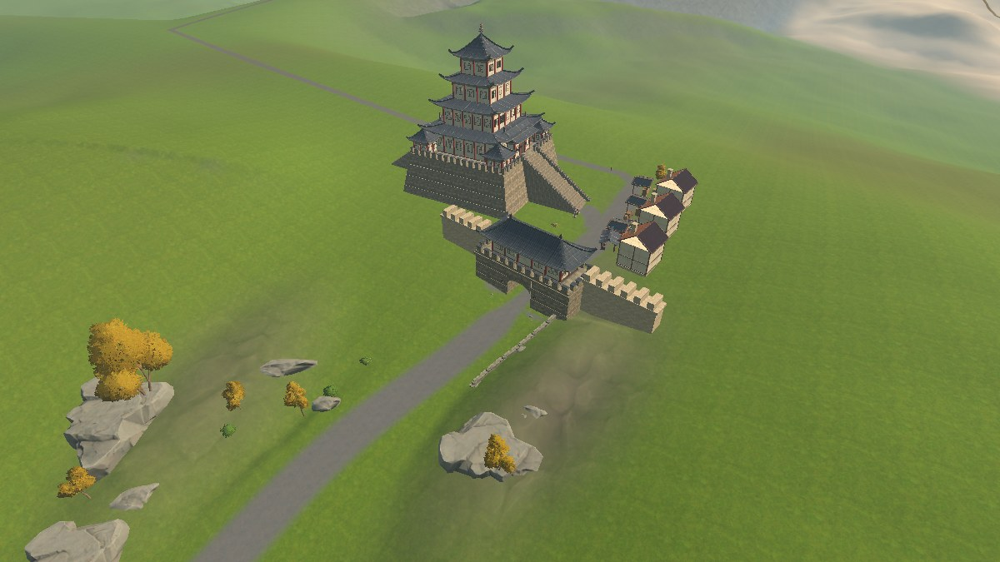
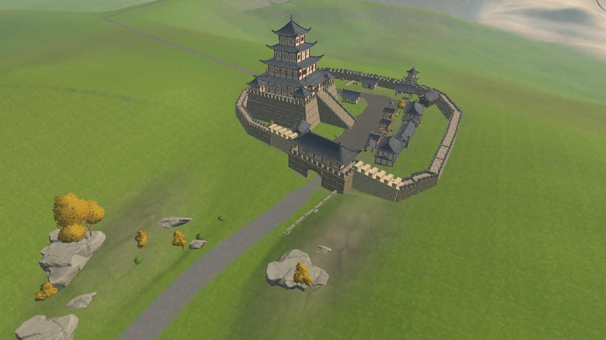
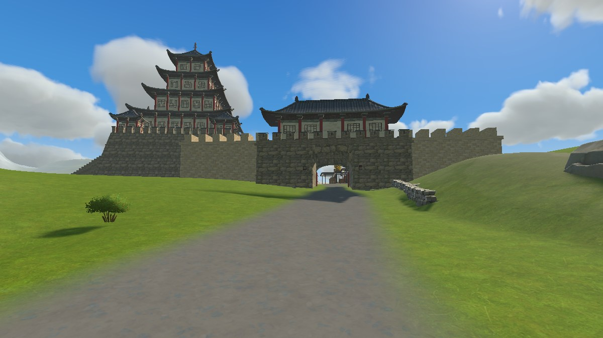
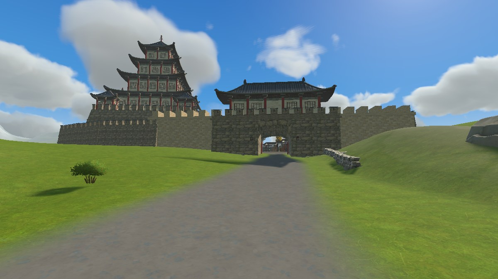
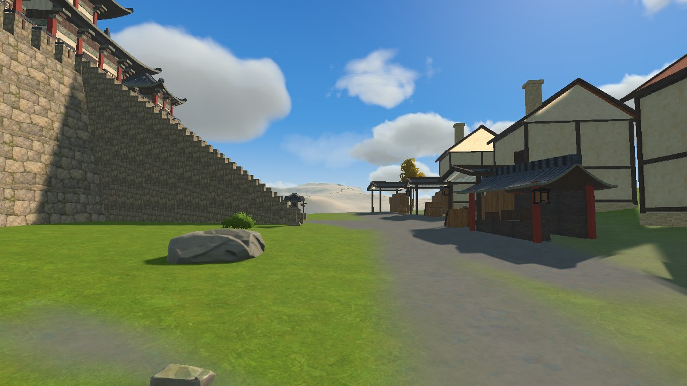
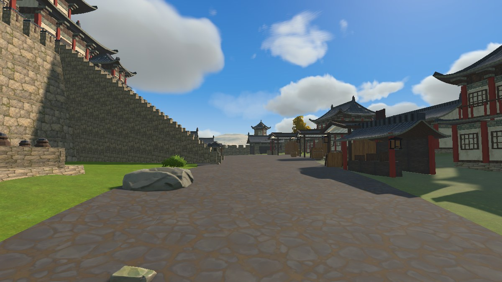
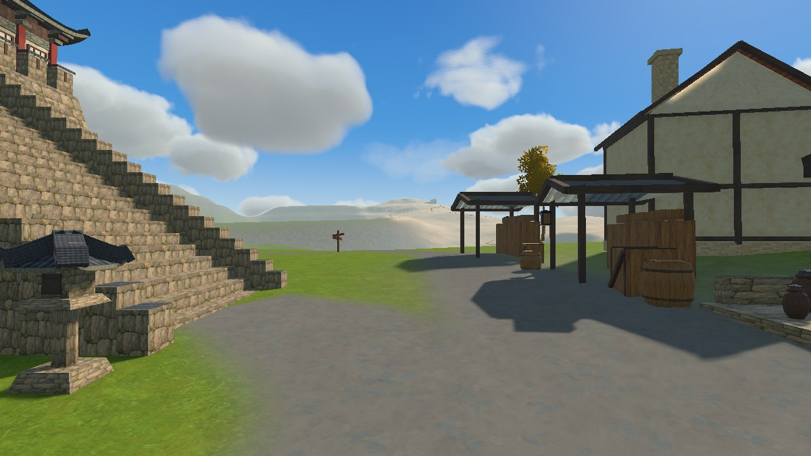
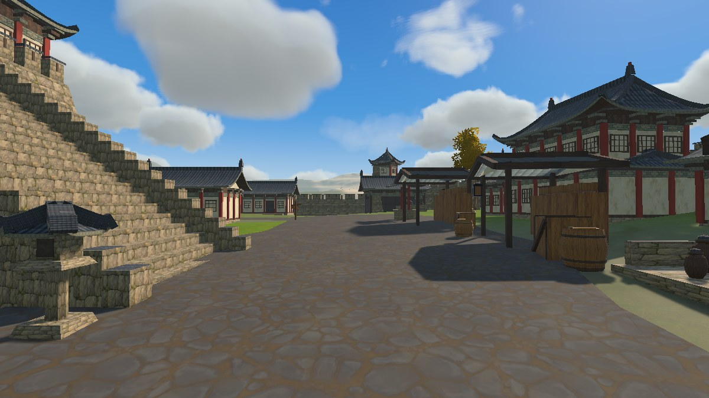
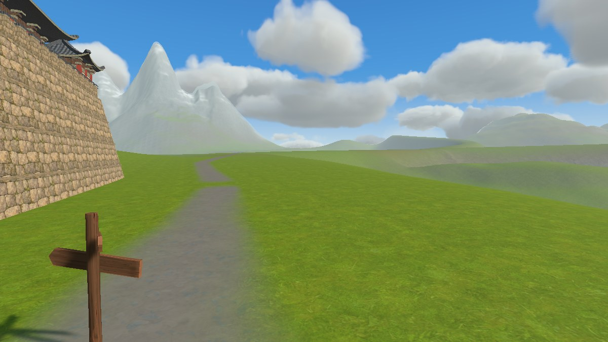
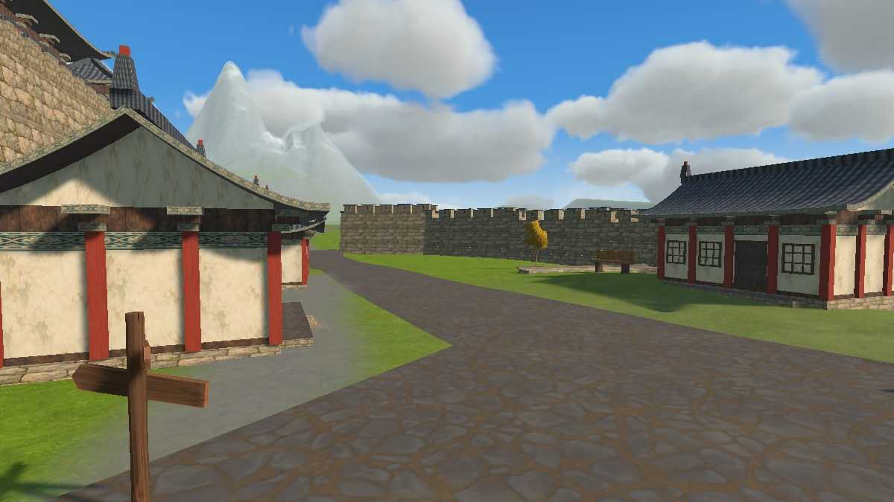
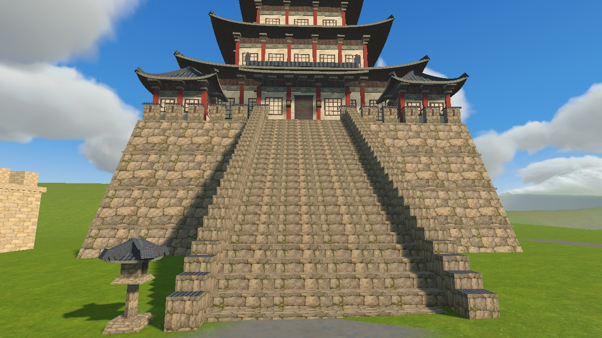
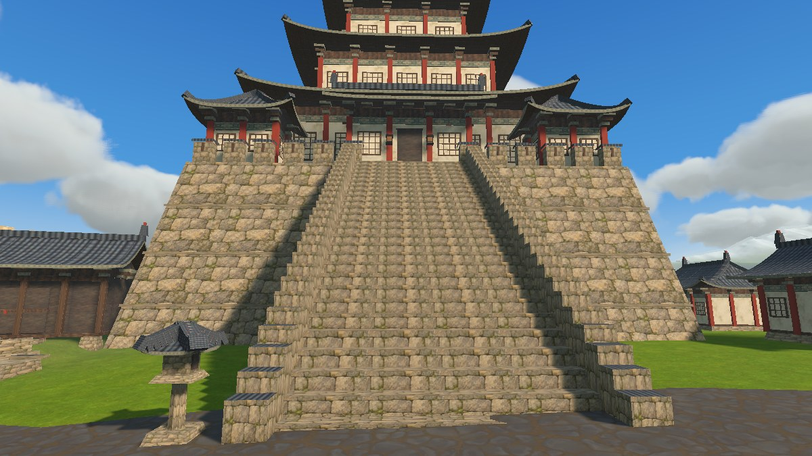
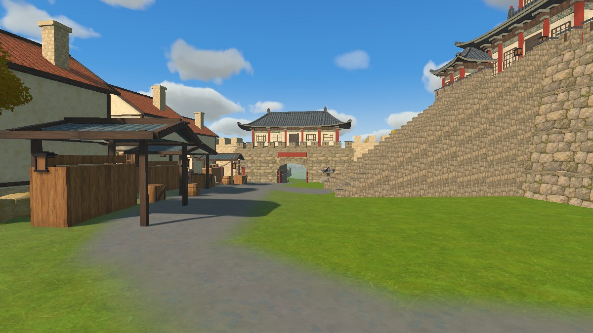
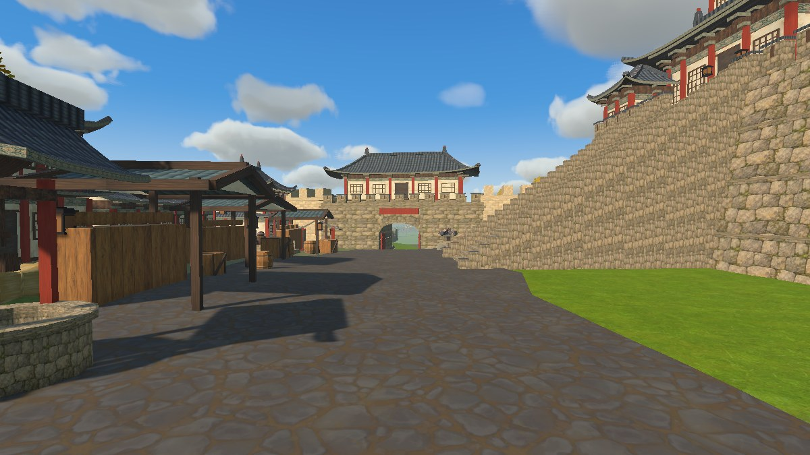
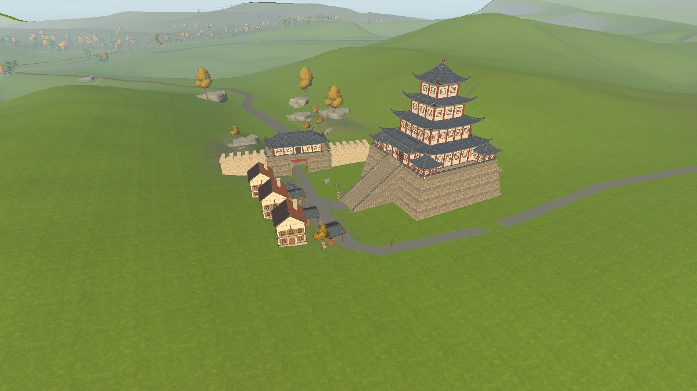
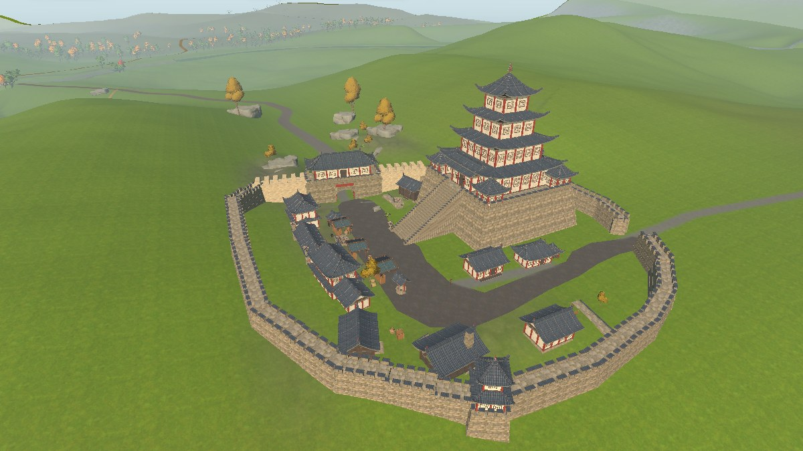